THE ZOO GANG, The Lion Hunt
Researched
and compiled by Paul Stroud
All locations in Nice unless otherwise stated
Please help find the Missing Locations for this episode
All locations in Nice unless otherwise stated
Please help find the Missing Locations for this episode
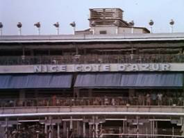
1:12
Nice Côte d’Azur Airport
Pedro arrives in France.
Nice Côte d’Azur Airport
Pedro arrives in France.
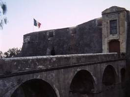
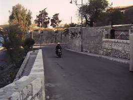
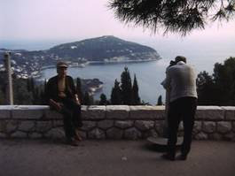
12:05
Boulevard de la Corne d’Or, Villefranche-sur-Mer
While a tourist admires Cap Ferrat, Alec steals his car.
Boulevard de la Corne d’Or, Villefranche-sur-Mer
While a tourist admires Cap Ferrat, Alec steals his car.
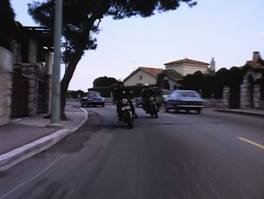
19:24
Boulevard de la Corne d’Or, Villefranche-sur-Mer
The gang forms a motorcade to take Pedro to a secret location.
Boulevard de la Corne d’Or, Villefranche-sur-Mer
The gang forms a motorcade to take Pedro to a secret location.
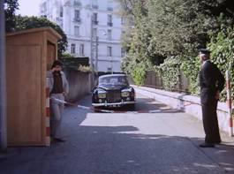
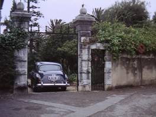
27:43
Rue Gustave Eiffel, Beaulieu-sur-Mer
Tommy, as Lord Bicester, arrives to look at the villa next-door to the one owned by Dupont.
Rue Gustave Eiffel, Beaulieu-sur-Mer
Tommy, as Lord Bicester, arrives to look at the villa next-door to the one owned by Dupont.
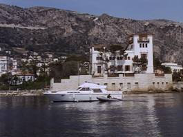
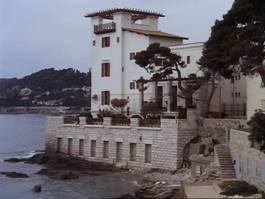
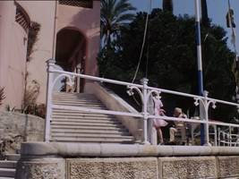
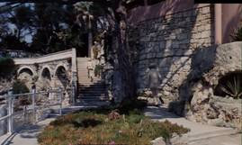
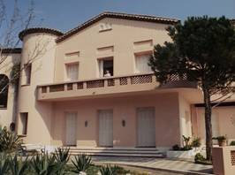
31:15
12 Av. Louise Bordes, Villefranche-sur-Mer, France
The villa next-door to Dupont’s.
Jill wants to look at the house, leaving ‘Lord Bicester’ to rest in the sun. When the coast is clear Tommy nips next-door. Jill watches from the balcony.
12 Av. Louise Bordes, Villefranche-sur-Mer, France
The villa next-door to Dupont’s.
Jill wants to look at the house, leaving ‘Lord Bicester’ to rest in the sun. When the coast is clear Tommy nips next-door. Jill watches from the balcony.
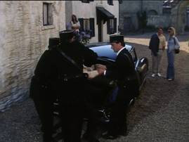
47:24
Pinewood backlot set
The police find Dupont in the boot of the stolen car with incriminating evidence.
Pinewood backlot set
The police find Dupont in the boot of the stolen car with incriminating evidence.
Missing locations
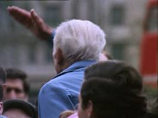
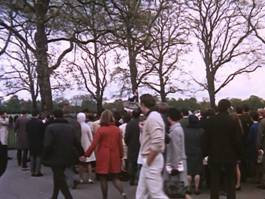
3:08
Demonstration at the arrest of Pedro.
Red bus emerging from right suggests London. That could only mean Hyde Park, couldn’t it? Speakers’ Corner?
Demonstration at the arrest of Pedro.
Red bus emerging from right suggests London. That could only mean Hyde Park, couldn’t it? Speakers’ Corner?
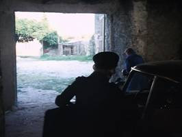
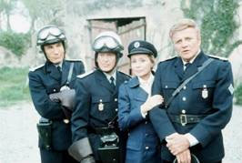
14:20
The gang’s hideout for the stolen car.
Publicity shot looks like the same area.
The gang’s hideout for the stolen car.
Publicity shot looks like the same area.
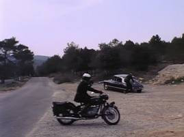
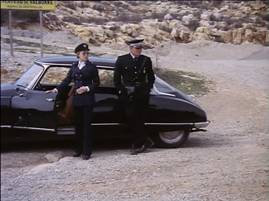
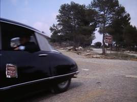
15:51
Yellow sign reads:
Plateau de Valbonne
Sophia Antipolis
Red sign reads:
Carréres
Fréga
Building had started on this estate in 1970
Likely to be anywhere here
Yellow sign reads:
Plateau de Valbonne
Sophia Antipolis
Red sign reads:
Carréres
Fréga
Building had started on this estate in 1970
Likely to be anywhere here
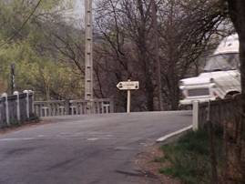
19:59
Ambulance crosses a bridge and follows the road along the river before being stopped at a police road-block.
Ambulance crosses a bridge and follows the road along the river before being stopped at a police road-block.
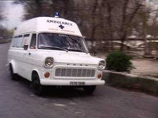
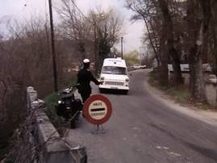
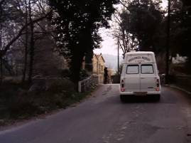
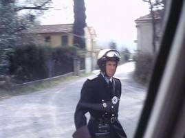
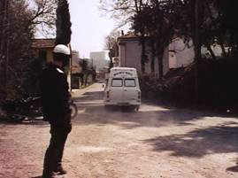
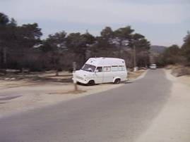
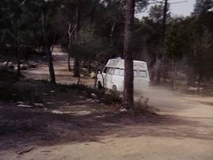
21:32
Ambulance leaves the main road.
Ambulance leaves the main road.
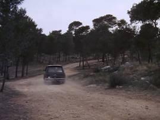
24:21
Dupont’s men kidnap Pedro
Dupont’s men kidnap Pedro
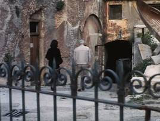
34:36
At Dupont’s villa, Manouche is lead to the imprisoned Pedro.
At Dupont’s villa, Manouche is lead to the imprisoned Pedro.